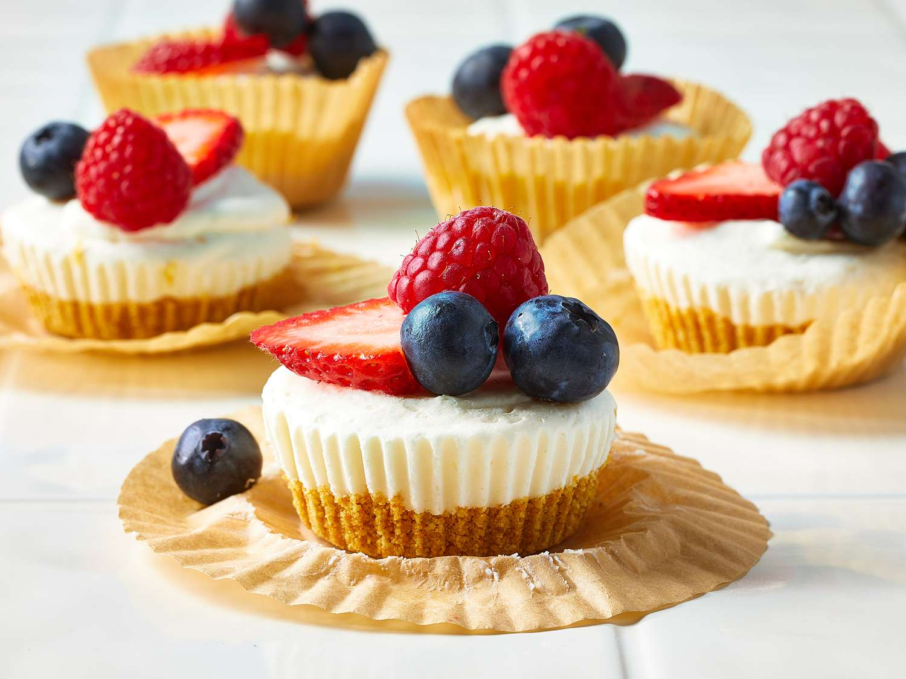

Home
Mini No-Bake Cheesecakes

Description
Teeny pancakes get the parfait treatment when they’re layered with yogurt,
mixed fruit, and pancakes’ bestie: maple syrup.
Ingredients
Crust
- 1 cup graham cracker crumbs
- 2 tablespoons brown sugar
- 1/4 cup buter
Filling
- 1/2 cup heavy whipping cream
- 8 ounces cream cheese
- 1/3 cup powdered sugar
- 2 tablespoons sour cream
- 2 teaspoons lemon juice
- 1 teaspoon vanilla extract
- 2/4 cup rasberries
Directions
- Gather all ingredients. Line a 12-cup muffin pan with muffin liners.
- For crust, combine graham cracker crumbs, brown sugar, and melted butter in a small bowl until evenly combined.
- Press 1 rounded tablespoon of crumb mixture evenly into the bottom of the prepared muffin pan. Freeze crusts until set while you prepare the filling, 15 to 20 minutes.
- For the filling, beat the cold whipping cream in a medium bowl until stiff peaks form, 3 to 5 minutes. Set aside.
- Beat cream cheese and sugar in a large bowl on medium-high speed until smooth and creamy, about 2 minutes.
- Add the sour cream, lemon juice, and vanilla extract to the cream cheese mixture. Beat until combined, about 1 minute.
- Fold in the reserved whipped cream, until just combined.
- Place the filling in a resealable 1 quart plastic bag. Snip off the corner of the bag to create a 1/2-inch opening.
- Pipe into prepared muffin pans, using about 2 1/2 tablespoons of mixture per cup. Smooth the tops as desired.
- Refrigerate, covered, for 3 hours or up to 5 days. Top with fresh berries or toppings of your choice.